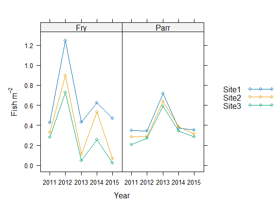

10 October 2023

Create Required Fields for Analysis
Create a factor for pass with separate levels for the first and subsequent passes. NOTE: Assuming the second and third pass have the same capture probability avoids problems with model identifiability (Millar et al., 2016)
Create a sampleID for grouping EF counts together. A sample is a unique combination of site visit x species x lifestage and is required by the EF function
ef_data$sampleID <-
as.numeric(
factor(
paste(ef_data$date, ef_data$siteID, ef_data$lifestage, ef_data$species)
)
)Create a visitID for unique site visits. This is required by the overdispersion function (see below).
Create a factor for year
ef_data$fyear <- factor(ef_data$year)Fit a Model
Fit a simple model. This contains a factor for pass (2 levels), lifestage (2 levels), site (3 levels) and year (5 levels). With a larger dataset it would also be possible to add continuous variables as linear or smoothed terms providing the degrees of freedom are specified (typically up to k=3 (2 d.f.), see Millar et al., 2016 for further details)
m1 <-
efp(
count ~ siteID + fyear + pass12 + lifestage,
data = ef_data, pass = pass, id = sampleID
)##
## Call:
## efp(formula = count ~ siteID + fyear + pass12 + lifestage, data = ef_data,
## pass = pass, id = sampleID)
##
## Formula:
## count ~ siteID + fyear + pass12 + lifestage
##
## No random effects
##
## Coefficients:
## Estimate Std. Error z value Pr(>|z^2|)
## (Intercept) 0.652301 0.1723 3.78656 1.527e-04
## siteIDSite2 0.074540 0.1354 0.55059 5.819e-01
## siteIDSite3 -0.023719 0.1473 -0.16098 8.721e-01
## fyear2012 -0.209949 0.1736 -1.20936 2.265e-01
## fyear2013 0.046976 0.1855 0.25317 8.001e-01
## fyear2014 0.358431 0.1834 1.95389 5.071e-02
## fyear2015 -0.004013 0.2114 -0.01899 9.849e-01
## pass122 -0.239160 0.1311 -1.82436 6.810e-02
## lifestageParr 0.590641 0.1210 4.88208 1.050e-06
##
## Degrees of Freedom: 90 Total (i.e. Null); 81 Residual
## AIC: 3188Get Predicted Values for P
The model needs to be reformatted to allow predictions (i.e. obtain P) capture probabilities, uses as.gam function.
m1_gam <- as.gam(m1)Predict P from the model to the full dataset. Note, if all the data is multi-pass then can just use fitted values. However, if you want P for both single and multi-pass data then predict to the new dataframe
ef_data$prob <- predict.gam(m1_gam, newdata=ef_data, type = "response")Obtain Cumulative Estimates of P (for estimation of densities later)
Aggregate counts by sampleID (i.e. counts of fry or parr per site visit)
counts <- aggregate(count ~ sampleID, ef_data, sum)Reshape to get capture probability by species x lifestage x site visit x pass. This facilitates the summary of P.
probs <- cast(ef_data, formula = sampleID ~ pass, value = "prob")Get cumulative capture probability by sampleID (see Glover et al., 2018)
Remove individual pass capture probabilities
probs <- select(probs, sampleID, prob)Remove pass and pass-specific data from dataframe
densdata <- unique(select(ef_data, -count, -prob, -pass, -pass12))Join data and cumulative counts by sampleID
densdata <- left_join(densdata, counts, by = "sampleID")Join data and cumulative capture probability by sampleID
densdata <- left_join(densdata, probs, by = "sampleID")Estimate Density
Density (N/m-2) is estimated as
densdata $ Density_Estimate <- densdata $ count / (densdata $ area *
densdata $ prob)If you want to model counts directly (Poisson model), you need to have cumulative P and area in the offset. For a Poisson model the offset is .
densdata $ offset <- log(densdata $ area * densdata $ prob)Plot to check

Comparing Models
Because electrofishing count data are typically overdispersed and because the modelling framework cannot incorpororate random effects, it it necessary to estimate the amount of overdispersion in the data and to account for this when comparing models.
Overdispersion is estimated by fitting a large model that captures most of the systematic variation in the data and comparing this to a visit-wise and saturated model (see Millar et al., 2016):
large_model <- efp(count ~ fyear + pass12 + lifestage,
data = ef_data, pass = pass, id = sampleID)Use the overdispersion function in the ef package and specify the data, visit ID, site ID, sample ID and the large model.
od_estimate <- overdispersion(data = ef_data, visitID = "visitID",
sampleID = "sampleID",
control = list(maxit = 100),
largemodel = large_model)## Saturated model start time 2023-10-10 17:02:30.602148
## Saturated model duration = 0 secs
## Site visit model start time 2023-10-10 17:02:30.800149
## Site visit model duration = 0 secsView overdispersion estimate. The ‘disp’ column contains the estimates of within and between sample overdispersion. The largest of these values is used to adjust the BIC.
od_estimate## llik nparam deviance df disp p
## saturated -1552.715 60 NA NA NA NA
## sitevisit -1579.952 22 54.47317 38 1.4335045 0.04057796
## large -1585.472 7 11.04111 15 0.7360738 0.74967497Compare models using the adjusted BIC function (Equation 4, Millar et al., 2016)
- Full model
mfull <- efp(count ~ siteID + year + lifestage + pass12,
data = ef_data, pass = pass, id = sampleID)
BICadj(mfull, od_estimate)- Model without lifestage
mlife <- efp(count ~ siteID + year + pass12,
data = ef_data, pass = pass, id = sampleID)
BICadj(mlife, od_estimate)contributing
After making changes to the code, run:
devtools::document()to update help files and the NAMESPACE
then
devtools::check()to check for errors, and fix warnings and notes
Finally, the readme can be rebuilt using
rmarkdown::render("README.Rmd")then changes can be commited and pushed.